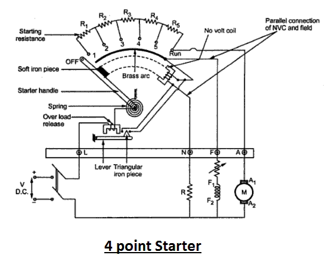
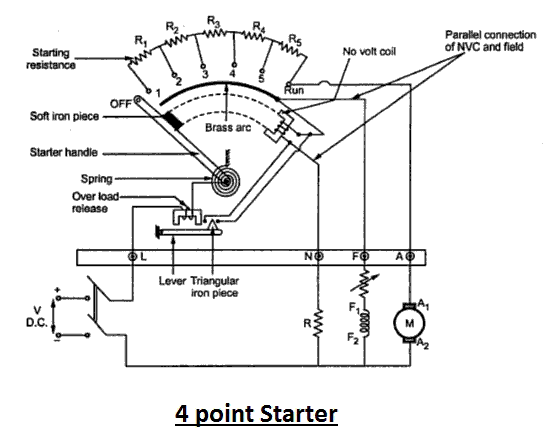
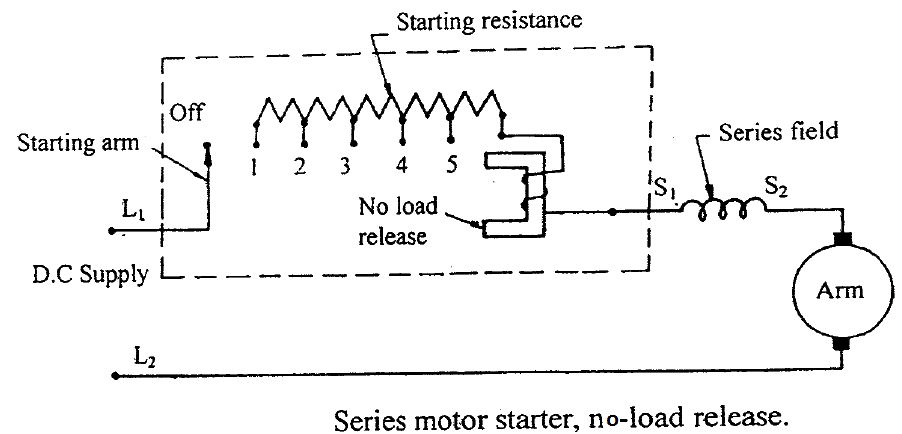

Starting of DC Motor
The starting of DC motor is somewhat different from the starting of all other types of electrical motors. This difference is credited to the fact that a dc motor unlike other types of motor has a very high starting electric current that has the potential of damaging the internal circuit of the armature winding of dc motor if not restricted to some limited value. This limitation to the starting electric current of dc motor is brought about by means of the starter. Thus the distinguishing fact about the starting methods of dc motor is that it is facilitated by means of a starter. Or rather a device containing a variable resistance connected in series to the armature winding so as to limit the starting electric current of dc motor to a desired optimum value taking into consideration the safety aspect of the motor.
Now the immediate question in why the DC motor has such high starting electric current ?
To give an explanation to the above mentioned question let us take into consideration the basic operational voltage equation of the dc motor given by,

Where E is the supply voltage, Ia is the armature current, Ra is the armature resistance. And the back emf is given by Eb.
Now the back emf, in case of a dc motor, is very similar to the generated emf of a dc generator as it’s produced by the rotational motion of the electric current carrying armature conductor in presence of the field. This back emf of dc motor is given by
and has a major role to play in case of the starting of dc motor.
From this equation we can see that Eb is directly proportional to the speed N of the motor. Now since at starting N = 0, Eb is also zero, and under this circumstance the voltage equation is modified to
 electric current motor" class="alignright"/>
electric current motor" class="alignright"/>
For all practical practices to obtain optimum operation of the motor the armature resistance is kept very small usually of the order of 0.5 Ω and the bare minimum supply voltage being 220 volts. Even under these circumstance the starting current, Ia is as high as 220/0.5 amp = 440 amp.
Such high starting electric current of dc motor creates two major problems.
1) Firstly, electric current of the order of 400 A has the potential of damaging the internal circuit of the armature winding of dc motor at the very onset.
2) Secondly, since the torque equation of dc motor is given by
Very high electromagnetic starting torque of DC motor is produced by virtue of the high starting current, which has the potential of producing huge centrifugal force capable of flying off the rotor winding from the slots.
Starting Methods of DC Motor
As a direct consequence of the two above mentioned facts i.e high starting electric current and high starting torque of DC motor, the entire motoring system can undergo a total disarray and lead towards into an engineering massacre and non-functionality. To prevent such an incidence from occurring several starting methods of dc motor has been adopted. The main principal of this being the addition of external electrical resistance Rext to the armature winding, so as to increase the effective resistance to Ra + Rext, thus limiting the armature electric current to the rated value. The new value of starting armature electric current is desirably low and is given by.
Now as the motor continues to run and gather speed, the back emf successively develops and increases, countering the supply voltage, resulting in the decrease of the net working voltage. Thus now,
At this moment to maintain the armature electric current to its rated value, Rext is progressively decreased unless its made zero, when the back emf produced is at its maximum. This regulation of the external electrical resistance in case of the starting of dc motor is facilitated by means of the starter.
Starters can be of several types and requires a great deal of explanation and some intricate level understanding. But on a brief over-view the main types of starters used in the industry today can be illustrated as:-
1) 3 point starter.
2) 4 point starter.
Used for the starting of shunt wound DC motor and compound wound DC motor.
 

3) Series wound DC motor's starter using no load release coil.

All of these play a very significant role in limiting starting electric current of DC motor for proper starting and running of the DC motor, and are described vividly under their respective sub-headings.
 by
by